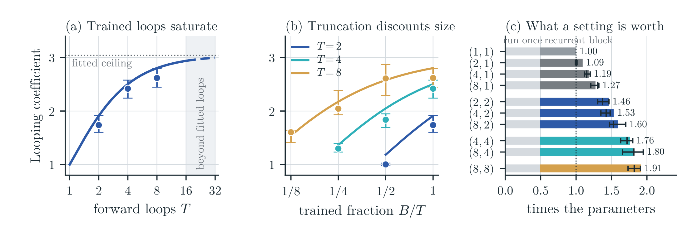

Loops add effective parameters; truncation discounts them
We measure what looping is worth by an effective parameter count: the size of a non-looped model that reaches the same loss on the same tokens. Each fully trained loop adds effective parameters, with diminishing returns toward a finite ceiling. Truncation discounts this gain, and from the same setting, doubling \(B\) adds more effective parameters than doubling \(T\).
- (4, 4) is worth 1.76× its parameters
- (4, 1) only 1.19×
